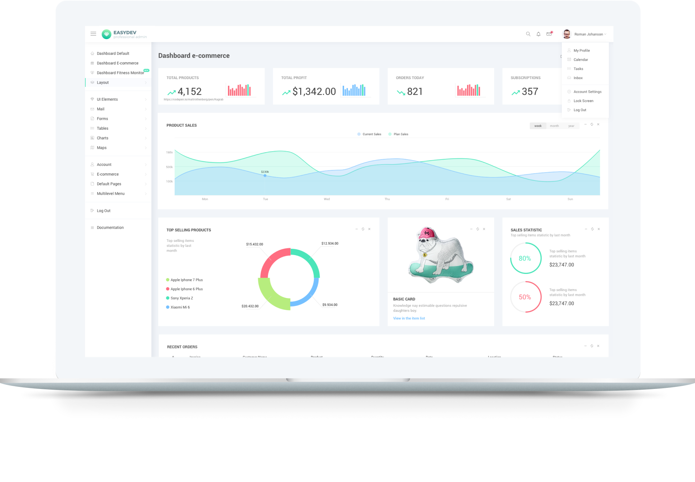

EasyDev — Developer Friendly React Bootstrap 4 Admin Template
EasyDev is a modern dashboard template based on React Components and Bootstrap 4 Framework. It’s a convenient template for developers, because of React Components, clean code and detailed documentation, which allows you to build any projects easily! It's suitable for e-commerce, analytics, sports and other types of web applications.
